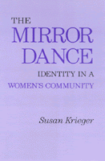

A unique book about a lesbian community—an experiment, both in women's language and in social science method
A unique book about a lesbian community—an experiment, both in women's language and in social science method


 A unique book about a lesbian community—an experiment, both in women's language and in social science method
A unique book about a lesbian community—an experiment, both in women's language and in social science method

|  |
The Mirror DanceIdentity in a Women's CommunitySusan Kriegerpaper EAN: 978-0-87722-314-6 (ISBN: 0-87722-314-9) |
"An absorbing account of a woman's community...Krieger's brilliant concluding essay on her method [is] the most exciting insight I've come across..."
—Kate Millett
"A day draws to a close. Helen worries about when her children will get home; Gloria considers her day at work and, again, thoughts cross her mind about telling them at church that she is a lesbian; Gayle prepares for a meeting at the Women's Shelter...; Ellen gets ready for a class. Chip and Jessica plan another party at their house; Diana paces her kitchen, troubled that Meg still intends to see Bronwyn...."
These are some of the people who come to life in this unique book about a lesbian community. It is an experiment, both in women's language and in social science method, and is composed of an interplay of voices that echo, again and again, themes of self and community, sameness and difference, merger and separation, loss and change.
Although the method of presentation is unusual, the book is based on solid research. The author lived for a year with the community and then spent two intensive months interviewing 78 women who were either members of the community or importantly associated with it. The author began by addressing several basic questions about privacy that quickly led her to explore dilemmas of identity. In time an even more compelling problem emerged: the loss of sense of self, how it occurs and how it may be dealt with in a social setting. The nature of the community itself raised this issue because it was a community of likeness, intimacy, and ideology. It was also a stigmatized or deviant community—and of women, individuals with life experiences that tended to encourage the giving up of the self to others.
The book is organized around particular kinds of situations and relationships in the community where conflicts concerning control over identity are especially prominent. It concludes with an essay on the author's method, "Fiction and Social Science."
"...Extraordinary: sensitive, vivid, and courageous. The study of a lesbian community, it explores the relationship of self to group, of private identity to public worlds."
—Catharine R. Stimpson, Institute for research on Women, Rutgers University
Susan Krieger is Visiting Scholar, Department of Sociology, Stanford University.
© 2015 Temple University. All Rights Reserved. This page: http://www.temple.edu/tempress/titles/312_reg.html.